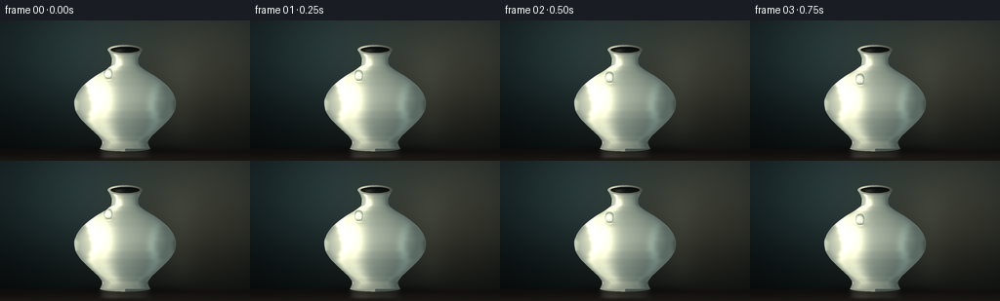
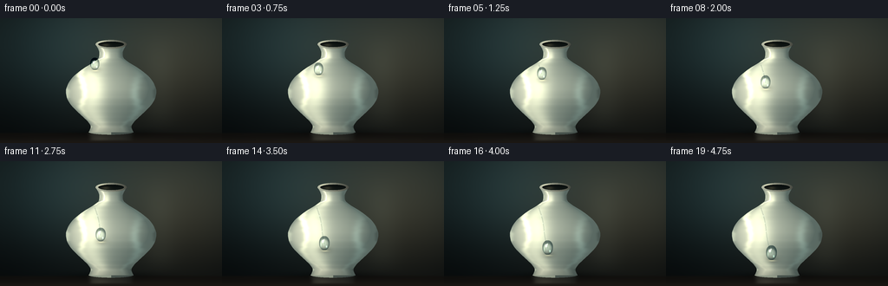
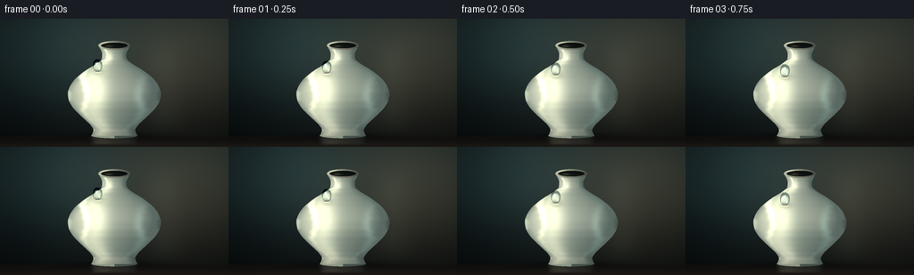
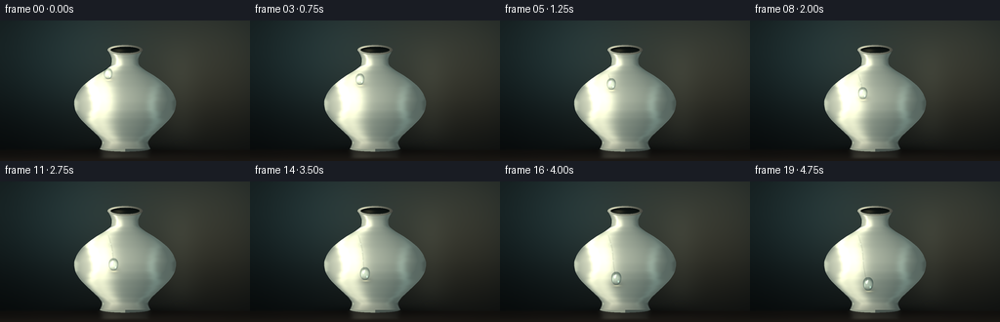
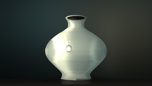
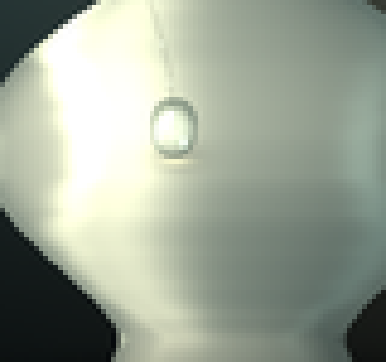
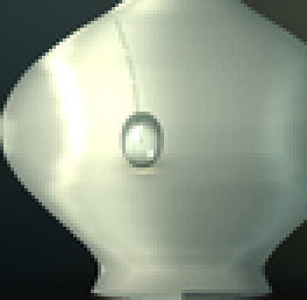
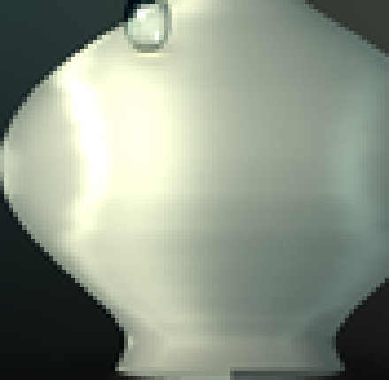
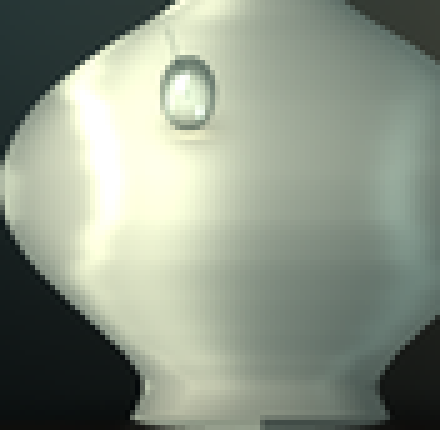
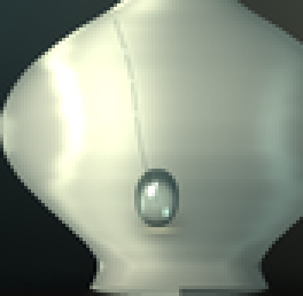

CODING AGENTS AS PIXEL WORLD MODELS
traex/DeepSeek-V4.1-Flash · phygen_039
点击播放 · 原生 RGB 像素
逐轮保存的候选
回放视频、检查图与代码变化。
每份候选均可单独播放。实际图片检查记录在下方工具轨迹中。
候选 01播放与检查图
点击播放 · 原生 RGB 像素


展开代码变化
--- 上一保存版本
+++ 本次保存版本
@@ -0,0 +1,412 @@
+from pathlib import Path
+
+import numpy as np
+from PIL import Image, ImageDraw
+from scipy.interpolate import PchipInterpolator
+from scipy.ndimage import gaussian_filter
+
+import artifact_io
+
+
+WIDTH = 256
+HEIGHT = 144
+FRAMES = 20
+FPS = 4.0
+SS = 4
+VW = WIDTH * SS
+VH = HEIGHT * SS
+CASE_DIR = Path(__file__).resolve().parent
+
+
+def smoothstep(edge0, edge1, value):
+ t = np.clip((value - edge0) / (edge1 - edge0), 0.0, 1.0)
+ return t * t * (3.0 - 2.0 * t)
+
+
+def ellipse(x, y, cx, cy, rx, ry):
+ return ((x - cx) / rx) ** 2 + ((y - cy) / ry) ** 2
+
+
+def drop_position(progress):
+ progress = float(np.clip(progress, 0.0, 1.0))
+ y = 55.0 + 50.5 * progress
+ x = 110.7 + 10.2 * progress + 1.15 * np.sin(2.0 * np.pi * progress)
+ rx = 4.45 + 0.85 * progress
+ ry = 5.15 + 1.05 * progress
+ return x, y, rx, ry
+
+
+def make_background(x, y):
+ yn = y / HEIGHT
+ xn = x / WIDTH
+
+ top = np.array([0.105, 0.151, 0.153], dtype=np.float32)
+ bottom = np.array([0.035, 0.052, 0.055], dtype=np.float32)
+ shade = smoothstep(0.02, 1.0, yn)
+ image = top[None, None, :] * (1.0 - shade[..., None])
+ image += bottom[None, None, :] * shade[..., None]
+
+ warm_glow = np.exp(
+ -(((x - 205.0) / 102.0) ** 2 + ((y - 48.0) / 79.0) ** 2)
+ )
+ image += warm_glow[..., None] * np.array([0.125, 0.092, 0.053], dtype=np.float32)
+
+ cool_glow = np.exp(
+ -(((x - 48.0) / 88.0) ** 2 + ((y - 38.0) / 70.0) ** 2)
+ )
+ image += cool_glow[..., None] * np.array([0.040, 0.077, 0.083], dtype=np.float32)
+
+ left_shade = smoothstep(0.0, 0.42, xn)
+ image *= (0.72 + 0.28 * left_shade)[..., None]
+
+ rng = np.random.default_rng(39)
+ fine = rng.normal(0.0, 1.0, (VH, VW)).astype(np.float32)
+ fine = gaussian_filter(fine, sigma=0.9 * SS)
+ image += fine[..., None] * 0.0035
+
+ # A broad, out-of-focus vertical studio reflection.
+ softbox = np.exp(-((x - 184.0) / 20.0) ** 2) * smoothstep(5.0, 62.0, y)
+ softbox *= 1.0 - smoothstep(104.0, 140.0, y)
+ image += softbox[..., None] * np.array([0.033, 0.036, 0.031], dtype=np.float32)
+
+ # Table plane and its quiet horizon.
+ table = smoothstep(130.7, 134.2, y)
+ table_color = np.array([0.100, 0.087, 0.072], dtype=np.float32)
+ table_color = table_color[None, None, :] * (
+ 0.70 + 0.38 * smoothstep(134.0, 144.0, y)
+ )[..., None]
+ image = image * (1.0 - table[..., None]) + table_color * table[..., None]
+
+ return image.astype(np.float32)
+
+
+def vase_profile(y):
+ points_y = np.array(
+ [
+ 31.5,
+ 33.0,
+ 36.0,
+ 40.0,
+ 45.0,
+ 50.0,
+ 56.0,
+ 62.0,
+ 69.0,
+ 77.0,
+ 84.0,
+ 91.0,
+ 99.0,
+ 107.0,
+ 114.0,
+ 120.0,
+ 125.0,
+ 129.0,
+ 131.5,
+ ],
+ dtype=np.float32,
+ )
+ points_r = np.array(
+ [
+ 16.8,
+ 16.2,
+ 14.6,
+ 13.5,
+ 14.1,
+ 19.3,
+ 29.0,
+ 37.5,
+ 45.2,
+ 50.2,
+ 52.2,
+ 51.2,
+ 47.0,
+ 39.6,
+ 32.2,
+ 26.2,
+ 23.5,
+ 24.7,
+ 26.0,
+ ],
+ dtype=np.float32,
+ )
+ return PchipInterpolator(points_y, points_r, extrapolate=False)(y)
+
+
+def render_vase(image, x, y):
+ cx = 128.0
+ radius = vase_profile(y)
+ radius = np.nan_to_num(radius, nan=0.0)
+
+ body = (y >= 31.5) & (y <= 132.0) & (np.abs(x - cx) <= radius)
+ foot = ellipse(x, y, cx, 131.2, 26.0, 3.1) <= 1.0
+ mask = body | foot
+
+ r_prev = vase_profile(y - 0.5)
+ r_next = vase_profile(y + 0.5)
+ slope = np.nan_to_num((r_next - r_prev) / 1.0, nan=0.0)
+ nx = np.clip((x - cx) / np.maximum(radius, 0.001), -1.0, 1.0)
+ nz = np.sqrt(np.maximum(0.0, 1.0 - nx * nx))
+ norm = np.sqrt(1.0 + slope * slope)
+ ny = -slope * nz / norm
+ nx = nx / norm
+ nz = nz / norm
+
+ light = np.array([-0.54, -0.25, 0.80], dtype=np.float32)
+ light /= np.linalg.norm(light)
+ diffuse = np.clip(nx * light[0] + ny * light[1] + nz * light[2], 0.0, 1.0)
+ diffuse = 0.24 + 0.76 * diffuse
+
+ base = np.array([0.700, 0.735, 0.654], dtype=np.float32)
+ shadow_tint = np.array([0.235, 0.303, 0.294], dtype=np.float32)
+ warm_tint = np.array([0.865, 0.775, 0.620], dtype=np.float32)
+
+ color = shadow_tint[None, None, :] * (1.0 - diffuse[..., None])
+ color += base[None, None, :] * diffuse[..., None]
+
+ warm_wrap = np.exp(-((nx + 0.58) / 0.34) ** 2) * smoothstep(0.12, 0.55, nz)
+ color += warm_wrap[..., None] * warm_tint[None, None, :] * 0.18
+
+ broad_spec = np.exp(-((nx + 0.38) / 0.205) ** 2)
+ broad_spec *= 0.55 + 0.45 * np.exp(-((y - 70.0) / 46.0) ** 2)
+ broad_spec *= smoothstep(31.0, 47.0, y) * (1.0 - smoothstep(116.0, 132.0, y))
+ color += broad_spec[..., None] * np.array([0.36, 0.34, 0.27], dtype=np.float32)
+
+ narrow_spec = np.exp(-((nx + 0.58) / 0.075) ** 2)
+ narrow_spec *= np.exp(-((y - 62.0) / 43.0) ** 2)
+ color += narrow_spec[..., None] * np.array([0.48, 0.46, 0.36], dtype=np.float32)
+
+ rim = np.exp(-((np.abs(nx) - 0.97) / 0.055) ** 2)
+ rim_left = rim * smoothstep(-0.15, -0.80, nx)
+ rim_right = rim * smoothstep(0.15, 0.82, nx)
+ color += rim_left[..., None] * np.array([0.18, 0.18, 0.14], dtype=np.float32)
+ color -= rim_right[..., None] * np.array([0.065, 0.075, 0.070], dtype=np.float32)
+
+ # Soft reflected strip from a second studio light.
+ strip = np.exp(-((nx - 0.52) / 0.10) ** 2)
+ strip *= np.exp(-((y - 92.0) / 31.0) ** 2)
+ color += strip[..., None] * np.array([0.10, 0.13, 0.12], dtype=np.float32)
+
+ rng = np.random.default_rng(11)
+ grain = rng.normal(0.0, 1.0, (VH, VW)).astype(np.float32)
+ grain = gaussian_filter(grain, sigma=1.3 * SS)
+ color += grain[..., None] * 0.006 * nz[..., None]
+
+ # Occlusion where the body meets the table.
+ low_occlusion = smoothstep(116.0, 132.0, y) * 0.13
+ color *= (1.0 - low_occlusion)[..., None]
+
+ image[mask] = color[mask]
+
+ outer_lip = ellipse(x, y, cx, 30.0, 18.0, 5.1) <= 1.0
+ inner_lip = ellipse(x, y, cx, 30.0, 14.8, 3.25) <= 1.0
+ lip = outer_lip & ~inner_lip
+ lip_n = np.clip((x - cx) / 18.0, -1.0, 1.0)
+ lip_light = 0.63 + 0.28 * (-lip_n)
+ lip_color = np.stack(
+ (
+ lip_light * 0.80,
+ lip_light * 0.82,
+ lip_light * 0.72,
+ ),
+ axis=-1,
+ )
+ lip_spec = np.exp(
+ -(((x - 119.0) / 6.0) ** 2 + ((y - 27.7) / 1.5) ** 2)
+ )
+ lip_color += lip_spec[..., None] * np.array([0.28, 0.26, 0.19], dtype=np.float32)
+ image[lip] = lip_color[lip]
+
+ # The shallow opening is dark, with a warm sliver of the inner wall.
+ opening = inner_lip
+ open_y = np.clip((y - 27.0) / 6.2, 0.0, 1.0)
+ open_color = np.stack(
+ (
+ 0.028 + 0.030 * open_y,
+ 0.045 + 0.034 * open_y,
+ 0.044 + 0.027 * open_y,
+ ),
+ axis=-1,
+ )
+ inner_wall = np.exp(
+ -(((x - 121.5) / 4.8) ** 2 + ((y - 30.8) / 1.7) ** 2)
+ )
+ open_color += inner_wall[..., None] * np.array([0.15, 0.13, 0.09], dtype=np.float32)
+ image[opening] = open_color[opening]
+
+ return image, mask
+
+
+def make_trail(x, y, progress, current_x, current_y):
+ if progress <= 0.01:
+ return np.zeros((VH, VW), dtype=np.float32)
+
+ trail_image = Image.new("L", (VW, VH), 0)
+ draw = ImageDraw.Draw(trail_image)
+ samples = max(5, int(38 * progress))
+ points = []
+ for value in np.linspace(0.0, progress, samples):
+ px, py, _, _ = drop_position(value)
+ points.append((int(round(px * SS)), int(round(py * SS))))
+ points.append((int(round(current_x * SS)), int(round(current_y * SS))))
+ draw.line(points, fill=255, width=max(2, int(round(1.05 * SS))), joint="curve")
+ trail = np.asarray(trail_image, dtype=np.float32) / 255.0
+ trail = gaussian_filter(trail, sigma=0.35 * SS)
+ return trail
+
+
+def render_drop(image, x, y, progress, trail):
+ dx, dy, rx, ry = drop_position(progress)
+
+ if trail.any():
+ image *= (1.0 - 0.13 * trail[..., None])
+ sheen = gaussian_filter(trail, sigma=0.9 * SS)
+ image += sheen[..., None] * np.array([0.055, 0.063, 0.056], dtype=np.float32)
+
+ # Tiny satellite beads make the trail read as water without adding clutter.
+ for bead_p, bead_scale in ((0.18, 0.46), (0.34, 0.34), (0.52, 0.40)):
+ if progress > bead_p + 0.035:
+ bx, by, _, _ = drop_position(bead_p)
+ bead = np.exp(
+ -(
+ ((x - bx) / (1.15 * bead_scale)) ** 2
+ + ((y - by) / (1.35 * bead_scale)) ** 2
+ )
+ )
+ bead_spec = np.exp(
+ -(
+ ((x - bx + 0.25) / 0.30) ** 2
+ + ((y - by + 0.28) / 0.35) ** 2
+ )
+ )
+ image += bead[..., None] * np.array([0.06, 0.085, 0.080], dtype=np.float32)
+ image += bead_spec[..., None] * np.array([0.24, 0.25, 0.20], dtype=np.float32)
+
+ # A wet contact shadow and a focused caustic sit just below the bead.
+ contact = np.exp(
+ -(
+ ((x - dx - 0.55) / (rx * 1.15)) ** 2
+ + ((y - dy - ry * 0.95) / (ry * 0.58)) ** 2
+ )
+ )
+ image *= (1.0 - 0.20 * contact[..., None])
+
+ caustic = np.exp(
+ -(
+ ((x - dx - rx * 0.15) / (rx * 0.66)) ** 2
+ + ((y - dy - ry * 1.12) / 0.78) ** 2
+ )
+ )
+ image += caustic[..., None] * np.array([0.27, 0.25, 0.17], dtype=np.float32)
+
+ u = (x - dx) / rx
+ v = (y - dy) / ry
+ top_extent = 1.24
+ side_width = np.where(
+ v < 0.0,
+ np.sqrt(np.maximum(0.0, 1.0 - (v / top_extent) ** 2)) * (1.0 - 0.17 * np.minimum(0.0, v)),
+ np.sqrt(np.maximum(0.0, 1.0 - np.minimum(v, 1.0) ** 2)),
+ )
+ horizontal_edge = smoothstep(0.0, 0.075, side_width - np.abs(u))
+ vertical_edge = smoothstep(0.0, 0.065, v + top_extent) * (
+ 1.0 - smoothstep(0.94, 1.02, v)
+ )
+ drop_mask = horizontal_edge * vertical_edge
+
+ radial = np.sqrt(u * u + v * v)
+ core = np.clip(1.0 - radial * radial, 0.0, 1.0)
+ dark_rim = smoothstep(0.62, 1.0, radial)
+
+ water = image * (0.76 + 0.28 * core[..., None])
+ water += core[..., None] * np.array([0.085, 0.115, 0.103], dtype=np.float32)
+ water -= dark_rim[..., None] * np.array([0.13, 0.115, 0.10], dtype=np.float32)
+ water += (1.0 - core[..., None]) * np.array([0.035, 0.055, 0.052], dtype=np.float32)
+
+ main_spec = np.exp(
+ -(
+ ((u + 0.30) / 0.17) ** 2
+ + ((v + 0.39) / 0.19) ** 2
+ )
+ )
+ pin_spec = np.exp(
+ -(
+ ((u + 0.08) / 0.072) ** 2
+ + ((v + 0.62) / 0.10) ** 2
+ )
+ )
+ lower_glint = np.exp(
+ -(
+ ((u - 0.42) / 0.12) ** 2
+ + ((v - 0.43) / 0.17) ** 2
+ )
+ )
+ upper_rim = np.exp(
+ -(
+ ((u + 0.67) / 0.10) ** 2
+ + ((v - 0.10) / 0.52) ** 2
+ )
+ )
+
+ water += main_spec[..., None] * np.array([1.05, 1.03, 0.91], dtype=np.float32)
+ water += pin_spec[..., None] * np.array([1.18, 1.14, 1.00], dtype=np.float32)
+ water += lower_glint[..., None] * np.array([0.30, 0.44, 0.40], dtype=np.float32)
+ water += upper_rim[..., None] * np.array([0.18, 0.22, 0.19], dtype=np.float32)
+
+ image = image * (1.0 - drop_mask[..., None]) + water * drop_mask[..., None]
+ return image
+
+
+def render_frame(frame_index):
+ yy, xx = np.mgrid[0:VH, 0:VW].astype(np.float32)
+ x = xx / SS
+ y = yy / SS
+
+ image = make_background(x, y)
+
+ # Contact shadow is laid onto the table before the ceramic body.
+ shadow = np.exp(
+ -(
+ ((x - 129.0) / 55.0) ** 2
+ + ((y - 132.1) / 4.2) ** 2
+ )
+ )
+ image *= (1.0 - 0.38 * shadow[..., None])
+
+ image, vase_mask = render_vase(image, x, y)
+
+ # A faint floor reflection anchors the object in the studio.
+ reflection_band = smoothstep(131.5, 133.0, y) * (1.0 - smoothstep(139.0, 143.0, y))
+ source_y = np.clip(2.0 * 132.0 - y, 0.0, HEIGHT - 1.0)
+ source_yy = np.clip((source_y * SS).astype(np.int32), 0, VH - 1)
+ source = image[source_yy, np.arange(VW)[None, :]]
+ reflection = gaussian_filter(source, sigma=(1.2 * SS, 2.2 * SS, 0))
+ image = image * (1.0 - 0.18 * reflection_band[..., None])
+ image += reflection * (0.18 * reflection_band[..., None])
+
+ progress = frame_index / (FRAMES - 1)
+ eased = progress - 0.055 * np.sin(2.0 * np.pi * progress)
+ dx, dy, _, _ = drop_position(eased)
+ trail = make_trail(x, y, max(0.0, eased - 0.035), dx, dy)
+ image = render_drop(image, x, y, eased, trail)
+
+ # Gentle, low-amplitude finishing grain and vignette.
+ vignette_x = np.clip((x - WIDTH * 0.5) / (WIDTH * 0.62), -1.0, 1.0)
+ vignette_y = np.clip((y - HEIGHT * 0.48) / (HEIGHT * 0.64), -1.0, 1.0)
+ vignette = np.clip(1.0 - 0.16 * (vignette_x**2 + vignette_y**2), 0.82, 1.0)
+ image *= vignette[..., None]
+
+ image = np.clip(image, 0.0, 1.0)
+ image = np.power(image, 0.96)
+
+ small = Image.fromarray(np.round(image * 255.0).astype(np.uint8), "RGB")
+ small = small.resize((WIDTH, HEIGHT), Image.Resampling.LANCZOS)
+ return np.asarray(small, dtype=np.uint8)
+
+
+def main():
+ frames = np.stack([render_frame(index) for index in range(FRAMES)], axis=0)
+ artifact_io.save(frames, CASE_DIR)
+ print(f"Saved {frames.shape[0]} frames to {CASE_DIR}")
+
+
+if __name__ == "__main__":
+ main()
候选 02播放与检查图
点击播放 · 原生 RGB 像素


展开代码变化
--- 上一保存版本
+++ 本次保存版本
@@ -29,10 +29,10 @@
def drop_position(progress):
progress = float(np.clip(progress, 0.0, 1.0))
- y = 55.0 + 50.5 * progress
- x = 110.7 + 10.2 * progress + 1.15 * np.sin(2.0 * np.pi * progress)
- rx = 4.45 + 0.85 * progress
- ry = 5.15 + 1.05 * progress
+ y = 53.5 + 53.0 * progress
+ x = 109.2 + 12.3 * progress + 1.05 * np.sin(2.0 * np.pi * progress)
+ rx = 5.35 + 0.95 * progress
+ ry = 6.20 + 1.15 * progress
return x, y, rx, ry
@@ -166,14 +166,14 @@
warm_wrap = np.exp(-((nx + 0.58) / 0.34) ** 2) * smoothstep(0.12, 0.55, nz)
color += warm_wrap[..., None] * warm_tint[None, None, :] * 0.18
- broad_spec = np.exp(-((nx + 0.38) / 0.205) ** 2)
+ broad_spec = np.exp(-((nx + 0.34) / 0.235) ** 2)
broad_spec *= 0.55 + 0.45 * np.exp(-((y - 70.0) / 46.0) ** 2)
broad_spec *= smoothstep(31.0, 47.0, y) * (1.0 - smoothstep(116.0, 132.0, y))
- color += broad_spec[..., None] * np.array([0.36, 0.34, 0.27], dtype=np.float32)
-
- narrow_spec = np.exp(-((nx + 0.58) / 0.075) ** 2)
+ color += broad_spec[..., None] * np.array([0.28, 0.27, 0.21], dtype=np.float32)
+
+ narrow_spec = np.exp(-((nx + 0.58) / 0.062) ** 2)
narrow_spec *= np.exp(-((y - 62.0) / 43.0) ** 2)
- color += narrow_spec[..., None] * np.array([0.48, 0.46, 0.36], dtype=np.float32)
+ color += narrow_spec[..., None] * np.array([0.39, 0.38, 0.29], dtype=np.float32)
rim = np.exp(-((np.abs(nx) - 0.97) / 0.055) ** 2)
rim_left = rim * smoothstep(-0.15, -0.80, nx)
@@ -242,15 +242,15 @@
trail_image = Image.new("L", (VW, VH), 0)
draw = ImageDraw.Draw(trail_image)
- samples = max(5, int(38 * progress))
+ samples = max(5, int(44 * progress))
points = []
for value in np.linspace(0.0, progress, samples):
px, py, _, _ = drop_position(value)
points.append((int(round(px * SS)), int(round(py * SS))))
points.append((int(round(current_x * SS)), int(round(current_y * SS))))
- draw.line(points, fill=255, width=max(2, int(round(1.05 * SS))), joint="curve")
+ draw.line(points, fill=255, width=max(2, int(round(1.28 * SS))), joint="curve")
trail = np.asarray(trail_image, dtype=np.float32) / 255.0
- trail = gaussian_filter(trail, sigma=0.35 * SS)
+ trail = gaussian_filter(trail, sigma=0.30 * SS)
return trail
@@ -258,9 +258,11 @@
dx, dy, rx, ry = drop_position(progress)
if trail.any():
- image *= (1.0 - 0.13 * trail[..., None])
- sheen = gaussian_filter(trail, sigma=0.9 * SS)
- image += sheen[..., None] * np.array([0.055, 0.063, 0.056], dtype=np.float32)
+ image *= (1.0 - 0.22 * trail[..., None])
+ sheen = gaussian_filter(trail, sigma=0.72 * SS)
+ image += sheen[..., None] * np.array([0.075, 0.095, 0.087], dtype=np.float32)
+ center_trail = gaussian_filter(trail, sigma=0.22 * SS)
+ image += center_trail[..., None] * np.array([0.035, 0.044, 0.039], dtype=np.float32)
# Tiny satellite beads make the trail read as water without adding clutter.
for bead_p, bead_scale in ((0.18, 0.46), (0.34, 0.34), (0.52, 0.40)):
@@ -278,17 +280,17 @@
+ ((y - by + 0.28) / 0.35) ** 2
)
)
- image += bead[..., None] * np.array([0.06, 0.085, 0.080], dtype=np.float32)
- image += bead_spec[..., None] * np.array([0.24, 0.25, 0.20], dtype=np.float32)
+ image += bead[..., None] * np.array([0.08, 0.105, 0.098], dtype=np.float32)
+ image += bead_spec[..., None] * np.array([0.27, 0.28, 0.22], dtype=np.float32)
# A wet contact shadow and a focused caustic sit just below the bead.
contact = np.exp(
-(
- ((x - dx - 0.55) / (rx * 1.15)) ** 2
+ ((x - dx - 0.65) / (rx * 1.12)) ** 2
+ ((y - dy - ry * 0.95) / (ry * 0.58)) ** 2
)
)
- image *= (1.0 - 0.20 * contact[..., None])
+ image *= (1.0 - 0.25 * contact[..., None])
caustic = np.exp(
-(
@@ -300,37 +302,42 @@
u = (x - dx) / rx
v = (y - dy) / ry
- top_extent = 1.24
+ top_extent = 1.32
side_width = np.where(
v < 0.0,
- np.sqrt(np.maximum(0.0, 1.0 - (v / top_extent) ** 2)) * (1.0 - 0.17 * np.minimum(0.0, v)),
+ np.sqrt(np.maximum(0.0, 1.0 - (v / top_extent) ** 2)) * (1.0 - 0.13 * np.minimum(0.0, v)),
np.sqrt(np.maximum(0.0, 1.0 - np.minimum(v, 1.0) ** 2)),
)
- horizontal_edge = smoothstep(0.0, 0.075, side_width - np.abs(u))
- vertical_edge = smoothstep(0.0, 0.065, v + top_extent) * (
+ horizontal_edge = smoothstep(0.0, 0.055, side_width - np.abs(u))
+ vertical_edge = smoothstep(0.0, 0.050, v + top_extent) * (
1.0 - smoothstep(0.94, 1.02, v)
)
drop_mask = horizontal_edge * vertical_edge
radial = np.sqrt(u * u + v * v)
core = np.clip(1.0 - radial * radial, 0.0, 1.0)
- dark_rim = smoothstep(0.62, 1.0, radial)
-
- water = image * (0.76 + 0.28 * core[..., None])
- water += core[..., None] * np.array([0.085, 0.115, 0.103], dtype=np.float32)
- water -= dark_rim[..., None] * np.array([0.13, 0.115, 0.10], dtype=np.float32)
- water += (1.0 - core[..., None]) * np.array([0.035, 0.055, 0.052], dtype=np.float32)
+ dark_rim = smoothstep(0.56, 0.99, radial)
+
+ water = image * (0.67 + 0.30 * core[..., None])
+ water += core[..., None] * np.array([0.070, 0.105, 0.095], dtype=np.float32)
+ water -= dark_rim[..., None] * np.array([0.20, 0.175, 0.145], dtype=np.float32)
+ water += (1.0 - core[..., None]) * np.array([0.045, 0.065, 0.061], dtype=np.float32)
+
+ refracted = gaussian_filter(image, sigma=(1.35 * SS, 1.35 * SS, 0))
+ lower_lens = smoothstep(0.05, 0.52, v) * (1.0 - smoothstep(0.64, 0.98, v))
+ water = water * (1.0 - 0.20 * lower_lens[..., None])
+ water += refracted * (0.20 * lower_lens[..., None])
main_spec = np.exp(
-(
- ((u + 0.30) / 0.17) ** 2
- + ((v + 0.39) / 0.19) ** 2
+ ((u + 0.29) / 0.16) ** 2
+ + ((v + 0.44) / 0.18) ** 2
)
)
pin_spec = np.exp(
-(
- ((u + 0.08) / 0.072) ** 2
- + ((v + 0.62) / 0.10) ** 2
+ ((u + 0.07) / 0.065) ** 2
+ + ((v + 0.67) / 0.092) ** 2
)
)
lower_glint = np.exp(
@@ -346,10 +353,10 @@
)
)
- water += main_spec[..., None] * np.array([1.05, 1.03, 0.91], dtype=np.float32)
- water += pin_spec[..., None] * np.array([1.18, 1.14, 1.00], dtype=np.float32)
- water += lower_glint[..., None] * np.array([0.30, 0.44, 0.40], dtype=np.float32)
- water += upper_rim[..., None] * np.array([0.18, 0.22, 0.19], dtype=np.float32)
+ water += main_spec[..., None] * np.array([1.20, 1.17, 1.03], dtype=np.float32)
+ water += pin_spec[..., None] * np.array([1.35, 1.31, 1.15], dtype=np.float32)
+ water += lower_glint[..., None] * np.array([0.38, 0.54, 0.48], dtype=np.float32)
+ water += upper_rim[..., None] * np.array([0.22, 0.27, 0.23], dtype=np.float32)
image = image * (1.0 - drop_mask[..., None]) + water * drop_mask[..., None]
return image
@@ -397,7 +404,7 @@
image = np.clip(image, 0.0, 1.0)
image = np.power(image, 0.96)
- small = Image.fromarray(np.round(image * 255.0).astype(np.uint8), "RGB")
+ small = Image.fromarray(np.round(image * 255.0).astype(np.uint8))
small = small.resize((WIDTH, HEIGHT), Image.Resampling.LANCZOS)
return np.asarray(small, dtype=np.uint8)
可观测工具轨迹
实际执行的命令与返回图片。
命令 1exit 0
/bin/bash -c "pwd && rg --files -g 'prompt.txt' -g 'GENERATION_RULES.md' -g 'task_spec.json' -g '"'!node_modules'"' -g '"'!vendor'"'"
命令 2exit 0
/bin/bash -c 'ls -la'
命令 3exit 0
/bin/bash -c 'cat prompt.txt'
命令 4exit 0
/bin/bash -c 'cat GENERATION_RULES.md'
命令 5exit 0
/bin/bash -c 'cat task_spec.json'
命令 6exit 0
/bin/bash -c "sed -n '1,240p' artifact_io.py"
命令 7exit 0
/bin/bash -c "sed -n '1,260p' player_template.html"
命令 8exit 0
/bin/bash -c "python - <<'PY'
import numpy, PIL
print('numpy', numpy.__version__)
print('PIL', PIL.__version__)
try:
import scipy
print('scipy', scipy.__version__)
except Exception as e:
print('no scipy', e)
PY"命令 9exit 0
/bin/bash -c 'python generate.py'
命令 10exit 0
/bin/bash -c 'command -v magick || command -v convert || true'
命令 11exit 0
/bin/bash -c "python - <<'PY'
from PIL import Image
im=Image.open('frames/10.png')
im.crop((80,55,160,130)).resize((640,600), Image.Resampling.NEAREST).save('.tmp/drop_crop.png')
PY"命令 12exit 0
/bin/bash -c 'python generate.py'
命令 13exit 0
/bin/bash -c "python - <<'PY'
from PIL import Image
for n in (0,6,12,19):
im=Image.open(f'frames/{n:02d}.png')
im.crop((76,48,164,134)).resize((440,430), Image.Resampling.NEAREST).save(f'.tmp/drop_crop_{n:02d}.png')
PY"命令 14exit 0
/bin/bash -c "python - <<'PY'
from pathlib import Path
import json
import numpy as np
from PIL import Image
case=Path('.')
spec=json.loads((case/'task_spec.json').read_text())
frames=sorted((case/'frames').glob('*.png'))
arr=np.load(case/'pixels.npz')['pixels']
print('frame files:', len(frames), frames[0].name, frames[-1].name)
print('pixels:', arr.shape, arr.dtype)
print('png modes/sizes:', sorted({(Image.open(p).mode, Image.open(p).size) for p in frames}))
print('index.html bytes:', (case/'index.html').stat().st_size)
print('first/last identical:', np.array_equal(arr[...,0], arr[...,-1]))
print('changed pixels first->last:', int(np.any(arr[...,0] "'!= arr[...,-1], axis=0).sum()))
PY'命令 15exit 0
/bin/bash -c 'git status --short 2>/dev/null || true'
视觉工具实际返回图片 1

视觉工具实际返回图片 2

视觉工具实际返回图片 3

视觉工具实际返回图片 4

视觉工具实际返回图片 5

视觉工具实际返回图片 6

视觉工具实际返回图片 7

视觉工具实际返回图片 8

视觉工具实际返回图片 9

保存候选 2 份；完成命令 15 次；可验证图片返回 9 张。原始 API 响应与完整日志保留在本地。